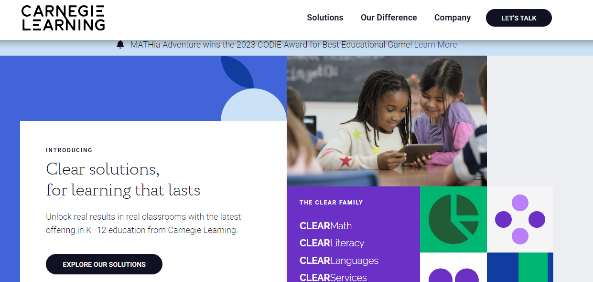

La IA tiene el potencial de transformar la educación en muchos aspectos. Algunas aplicaciones clave incluyen el aprendizaje personalizado, los sistemas de tutoría inteligente y la evaluación automatizada.
Inteligencia artificial para docentes: cómo transformar la educación con tecnología
Aplicaciones de la IA en la educación
2.1. Aprendizaje personalizado
Los sistemas de IA pueden adaptar el material de aprendizaje a las necesidades individuales de los estudiantes, permitiendo un enfoque de enseñanza personalizado (Baker y Siemens, 2014). Plataformas como Knewton y DreamBox Learning ya están aplicando este enfoque.
2.2. Sistemas de tutoría inteligente
Los sistemas de tutoría inteligente pueden proporcionar a los estudiantes feedback instantáneo y personalizado, mejorar el compromiso y facilitar el aprendizaje a su propio ritmo (VanLehn, 2011). Una ejemplo de esto es Carnegie Learning.

2.3. Evaluación automatizada
La IA puede automatizar la evaluación de tareas y exámenes, liberando tiempo para que los docentes se concentren en otras áreas de su práctica docente (Shute y Zapata-Rivera, 2008). Herramientas como Turnitin y Grammarly usan IA para detectar el plagio y verificar la gramática, respectivamente.
Obra publicada con Licencia Creative Commons Reconocimiento Compartir igual 4.0